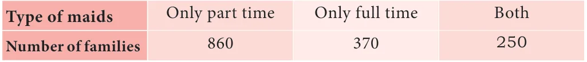

- A company manufactures 10000 Laptops in 6 months. Out of which 25 of them are found to be defective. When you choose one Laptop from the manufactured, what is the probability that selected Laptop is a good one.
- In a survey of 400 youngsters aged 16-20 years, it was found that 191 have their voter ID card. If a youngster is selected at random, find the probability that the youngster does not have their voter ID card.
- The probability of guessing the correct answer to a certain question is \(\frac{x}{3}\). If the probability of not guessing the correct answer is \(\frac{x}{5}\), then find the value of \(x\).
- If a probability of a player winning a particular tennis match is 0.72. What is the probability of the player loosing the match?
- 1500 families were surveyed and following data was recorded about their maids at homes

A family is selected at random. Find the probability that the family selected has
(i) Both types of maids (ii) Part time maids (iii) No maids